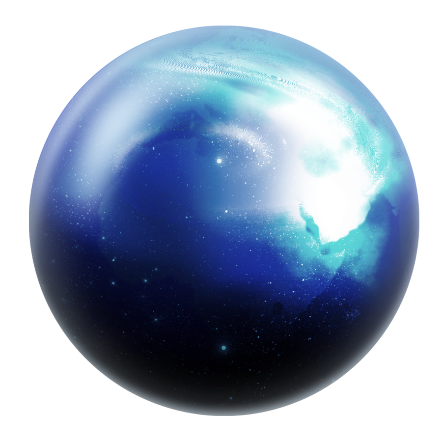
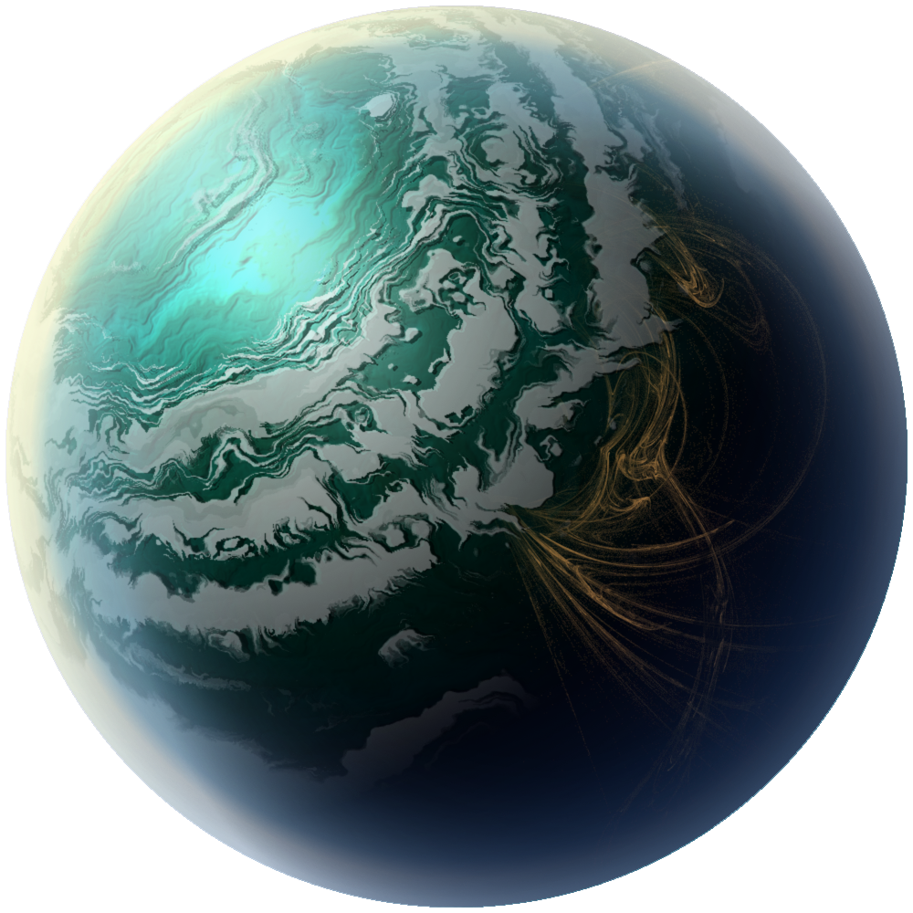

Space: The final frontier
To seek out new life and new civilizations, to boldly go where no man has gone before.
Deep Space
Many say exploration is part of our destiny, but it’s actually our duty to future generations and their quest to ensure the survival of the human species.
Buy why, some say, the moon? Why choose this as our goal? And they may as well ask why climb the highest mountain?
Many say exploration is part of our destiny, but it’s actually our duty to future generations and their quest to ensure the survival of the human species.
Problems look mighty small from 150 miles up.
Astronomy compels the soul to look upward, and leads us from this world to another.
A Chinese tale tells of some men sent to harm a young girl who, upon seeing her beauty, become her protectors rather than her violators. That's how I felt seeing the Earth for the first time. I could not help but love and cherish her.
As we got further and further away, it [the Earth] diminished in size. Finally it shrank to the size of a marble, the most beautiful you can imagine. That beautiful, warm, living object looked so fragile, so delicate, that if you touched it with a finger it would crumble and fall apart. Seeing this has to change a man.
We choose to go to the moon in this decade and do the other things, not because they are easy, but because they are hard, because that goal will serve to organize and measure the best of our energies and skills, because that challenge is one that we are willing to accept, one we are unwilling to postpone, and one which we intend to win.
Where ignorance lurks, so too do the frontiers of discovery and imagination.
Never in all their history have men been able truly to conceive of the world as one: a single sphere, a globe, having the qualities of a globe, a round earth in which all the directions eventually meet, in which there is no center because every point, or none, is center — an equal earth which all men occupy as equals. The airman's earth, if free men make it, will be truly round: a globe in practice, not in theory.
The dreams of yesterday are the hopes of today and the reality of tomorrow.
The dreams of yesterday are the hopes of today and the reality of tomorrow.
Where ignorance lurks, so too do the frontiers of discovery and imagination.
We choose to go to the moon in this decade and do the other things, not because they are easy, but because they are hard, because that goal will serve to organize and measure the best of our energies and skills, because that challenge is one that we are willing to accept, one we are unwilling to postpone, and one which we intend to win.
Many say exploration is part of our destiny, but it’s actually our duty to future generations and their quest to ensure the survival of the human species.
It suddenly struck me that that tiny pea, pretty and blue, was the Earth. I put up my thumb and shut one eye, and my thumb blotted out the planet Earth. I didn't feel like a giant. I felt very, very small.
I believe every human has a finite number of heartbeats. I don't intend to waste any of mine
Science cuts two ways, of course; its products can be used for both good and evil. But there's no turning back from science. The early warnings about technological dangers also come from science.
We want to explore. We’re curious people. Look back over history, people have put their lives at stake to go out and explore … We believe in what we’re doing. Now it’s time to go.
Curious that we spend more time congratulating people who have succeeded than encouraging people who have not.
Science cuts two ways, of course; its products can be used for both good and evil. But there's no turning back from science. The early warnings about technological dangers also come from science.
NASA is not about the ‘Adventure of Human Space Exploration’…We won’t be doing it just to get out there in space – we’ll be doing it because the things we learn out there will be making life better for a lot of people who won’t be able to go.
Science cuts two ways, of course; its products can be used for both good and evil. But there's no turning back from science. The early warnings about technological dangers also come from science.
The regret on our side is, they used to say years ago, we are reading about you in science class. Now they say, we are reading about you in history class.
Buy why, some say, the moon? Why choose this as our goal? And they may as well ask why climb the highest mountain?
Astronomy compels the soul to look upward, and leads us from this world to another.
What was most significant about the lunar voyage was not that man set foot on the Moon but that they set eye on the earth.
Failure is not an option.
Never in all their history have men been able truly to conceive of the world as one: a single sphere, a globe, having the qualities of a globe, a round earth in which all the directions eventually meet, in which there is no center because every point, or none, is center — an equal earth which all men occupy as equals. The airman's earth, if free men make it, will be truly round: a globe in practice, not in theory.
It suddenly struck me that that tiny pea, pretty and blue, was the Earth. I put up my thumb and shut one eye, and my thumb blotted out the planet Earth. I didn't feel like a giant. I felt very, very small.
The sky is the limit only for those who aren't afraid to fly!
As we got further and further away, it [the Earth] diminished in size. Finally it shrank to the size of a marble, the most beautiful you can imagine. That beautiful, warm, living object looked so fragile, so delicate, that if you touched it with a finger it would crumble and fall apart. Seeing this has to change a man.
As we got further and further away, it [the Earth] diminished in size. Finally it shrank to the size of a marble, the most beautiful you can imagine. That beautiful, warm, living object looked so fragile, so delicate, that if you touched it with a finger it would crumble and fall apart. Seeing this has to change a man.
Space, the final frontier. These are the voyages of the Starship Enterprise. Its five-year mission: to explore strange new worlds, to seek out new life and new civilizations, to boldly go where no man has gone before.
What was most significant about the lunar voyage was not that man set foot on the Moon but that they set eye on the earth.
To be the first to enter the cosmos, to engage, single-handed, in an unprecedented duel with nature—could one dream of anything more?
I don't know what you could say about a day in which you have seen four beautiful sunsets.
We have an infinite amount to learn both from nature and from each other
There can be no thought of finishing for ‘aiming for the stars.’ Both figuratively and literally, it is a task to occupy the generations. And no matter how much progress one makes, there is always the thrill of just beginning.
I believe every human has a finite number of heartbeats. I don't intend to waste any of mine